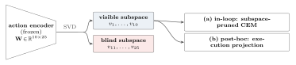

When a world model compresses each action block through a bottleneck narrower than the block, the frozen encoder fixes a set of directions the planning cost can never see. A sampling planner still samples along them, so its executed plan carries motion it never chose. Restricting the sampler to the visible directions removes that motion and provably cannot worsen the best achievable plan. Whether it also improves success is a separate question, and the answer differs by checkpoint.
A sustained perturbation along the model's blind action subspace. The camera difference grows to millimeters; the model's imagined difference stays at the float32 floor. (Imagination tiles: post-hoc visualization decoder, never used in planning.)
On a released Cube checkpoint, the action encoder maps 25 action dimensions to 10. When the bottleneck is narrower than the action block is wide, some directions reach zero: here a 15-dimensional null space that is the same at every state, whatever the training data. The cost is provably constant along it. Three measurements say what that does to planning.
They are not inert. On Cube, a sustained perturbation along blind directions moves the manipulated object in all eight probe states, and the deviation compounds over the horizon with no sign of saturating. Scene and Cube-double respond in one of five and six of eight states.
No model-side check reports it. For the same perturbations, the divergence measured by encoding the resulting camera frames reaches a median 0.043 in the model's latent metric at twelve blocks, while the imagined divergence sits at the float32 accumulation floor. No quantity the model computes registers the perturbation on these probe states.
The planner is the main source. Elite selection scores candidates through the model, so it exerts no pressure on blind coordinates and the executed mean performs an unselected random walk.
In the environment, one sustained blind perturbation compounds over the horizon (the probe state of the clip at the top of the page). The model's imagined latent never moves off the float32 floor.
Inside the solver (instrumented CEM, Cube seed 0, medians over 50 episodes), the proposal contracts almost identically along visible and blind directions. The blind part of the executed mean is therefore an unselected walk, ending at 2.89 per block against a selection-free prediction of 2.95. The pruned solver never represents those coordinates.
Everything is read off the frozen checkpoint. One SVD of the action encoder splits each action block into the 10 directions the cost can see and the 15 it cannot. Restricting the sampler to the visible directions cannot worsen the best achievable plan, whether it runs inside the planning loop (a) or post hoc on the executed action (b). This is the architectural tier, and its guarantee is exact.
The task tier goes one step further. The spectrum of the cost gradient shows how few visible directions the cost actually varies along, and the sampler keeps only the directions above a deep spectral gap. This tier has no such guarantee. The bound behind it controls how far the cost strays from its average over the kept directions, not closed-loop success, and cutting at the wrong place costs points. What it buys has to be measured per checkpoint.

One SVD of the frozen action encoder, two uses; redrawn from the paper's overview figure. The cost is provably constant along the blind subspace, so restricting the sampler preserves the optimum. Under block-decomposable proposals it also preserves the law of the visible search, an assumption the ambient sampler satisfies exactly only at its first iteration.
On Cube, the task tier gains +10.7 points over ambient CEM, and every seed is positive. Of 300 paired episodes, 39 improve and 7 degrade. On Cube-double the gain is +12.3, with 49 pairs improving and 12 degrading. Cube-triple is a sixth checkpoint, trained from scratch as an appendix control rather than one of the five benchmarks. Scene, Cube-double and Cube-triple have no released checkpoints; we trained them with the released recipe on 3,000 collected episodes against the released 10,000. The paired clips below replay the same start state and seed in both columns.
Success rate at N=300, mean over seeds (hover a bar for the seed count). Paired differences quoted in the text are computed on the seeds the two arms share, so they are not the difference of the bars shown. Pruning the blind subspace moves success by at most 6 points on any checkpoint and is significant only on Cube (+6.0). The task tier pays where the spectrum collapses (Cube +10.7, Cube-double +12.3). On PushT and Two-Room it does not, and on Scene the spectrum is gapless so it is never applied.
The stock protocol scales the elite count with the budget, which thins the executed blind component from a predicted 2.95 per block to 1.23. Over a 27-fold range the gap does not close.
The instrumented solver reproduces both predictions. The executed blind component has median norm 2.89 per block against a predicted 2.95, and an independent pipeline reading the commands gets 2.87.
The execution projection isolates one channel: the sampler is left unchanged and only the executed action is projected onto the visible subspace at actuation time.
At N=300 it recovers the whole pruning gain, +6.7 over ambient (p=0.0002, every seed), and pruned sampling adds nothing beyond it. At that budget the Cube gain comes from removed noise rather than sharper search. At N=2700 this reverses: the projection recovers +1.7 (p=0.27) while pruned sampling holds +4.0 (p=0.0075). The gain shrinks with the predicted noise, as the account requires. A residual +2.3 favours pruned sampling on all six seeds at p=0.12; we leave it unattributed.
The blind component of the CEM mean over 30 iterations, on Cube. Selection never acts on these coordinates, so the mean walks instead of converging.
On the three checkpoints with a null space the restriction provably cannot worsen the optimum; on the two full-rank ones it costs nothing measurable. Whether it also pays differs by environment, and two preregistered instruments say which of two sources is responsible. Removing executed noise pays where the dose curve is steep, as on Cube. Concentrating samples pays where the spectrum collapses, as on Cube-double. Scene has neither, so the task tier is never applied to it.
These instruments account for the payoffs we measured but do not predict new ones: a freshly trained checkpoint that matches Cube-double's spectral profile gains nothing from its own gap cut.
One Cube episode at three doses of executed blind noise. Removing the planner's own noise gains +6.7 (p=0.0002, every seed). The largest dose drops 4.0, marginal at six seeds (p=0.058, signs mixed).
Paired change in success as the executed blind amplitude is removed (x=0) or raised. Steep on Cube, flat on Scene and Cube-double.
Cost-gradient spectra. A deep gap marks where the criterion reads k; Scene has none.
Sampling k directions against ambient CEM, on shared seeds. Cutting through the gap costs 26.0 points on Cube and 10.7 on Cube-double (p=0.0025) relative to the gapped arm of the same checkpoint, not relative to the ambient bars shown here. On Cube-triple the criterion's own k pays nothing, which is the preregistered miss.
Per-task outcomes, one strip per sampler arm with its 50 stored episodes in order, are on the evidence page, together with the preregistration ledger of what each instrument predicted before its data existed.
The spectrum is not the only way to choose directions. A block holding one command across all five control steps spans a similar subspace and costs nothing to build. We ran it as a preregistered control.
On Cube the two are not distinguishable over 300 pairs: +3.0 for the task tier, CI [+0.0, +6.3], p=0.09. On Cube-double the hand-built basis wins by 3.3, CI [−6.3, −0.3], p=0.05, and holding all five components loses 10.0 against holding three. Where they are not distinguishable, we cannot say at this sample size what the spectrum adds over the block layout.
The execution projection used elsewhere here targets the whole visible subspace, which the invariance covers. Projecting onto a strict subspace has no such guarantee: it discards visible components that elite selection acts on. On PushT that costs −8.0, CI [−13.3, −2.7], p=0.0075, none of three seeds positive.
The paper scopes its evidence in eight ways, set out below as ten, each with the measurement that sets it.
All five benchmarks are simulated, and every checkpoint with an exactly blind subspace comes from one family with a linear first action layer. Effect sizes do not transfer even within the family, and no hardware result is reported.
On out-of-family TD-MPC2 checkpoints the criterion finds no gap and truncates nothing. No gain under it outside this family has been observed.
Across three from-scratch retrains the top-four restriction stays positive, but the gap shifts and shallows. On one, the criterion reads a harmful k and loses 9.3 points. The criterion's k is reliable only where the gap is deep.
A third checkpoint matching Cube-double's gap position, post-gap mass and flat-direction count gains nothing from its own gap cut.
Sixteen on Cube and eight on PushT, and these are calibration states, not the eight Cube probe states used for growth. Coverage averages slightly below nominal.
The ambient sampler satisfies the decoupling assumption only at its first iteration, and the residual coupling is measured rather than bounded, so the execution projection carries the attribution. Every projection here targets the whole visible subspace; a strict subspace discards components selection acts on, and no result here measures that cost.
On the two full-rank checkpoints the number of directions to drop is set per environment by paired ablation. There is no universal cutoff.
One checkpoint, and one where the learned prior already dominates, so pruning's marginal value under it is unresolvable at this sample size.
The active subspace moves up to seven degrees under the final elite distribution, with no theory for the shifting measure. The Poincaré bound controls cost approximation, not closed-loop success. Reading effective dimension as controllable degrees of freedom fits five checkpoints without being tested by them.
The preregistered action-repeat control matches the task tier on Cube over 300 pairs and beats it by 3.3 on Cube-double. Where they match, a difference inside the interval remains possible. This covers CEM at the standard budget, and the task tier's edge over the architectural tier on Cube is pooled-significant but seed-mixed.
And one on the other side: widening the bottleneck to at least the block width removes the null space at training time. Training at fixed width can only rotate it. This work takes checkpoints as frozen and measures what a sampler-side restriction recovers without that fix. The records behind all of this are on the evidence page.
@inproceedings{anonymous2027subspace,
title = {Subspace-Restricted Planning under Action Compression in Latent World Models},
author = {Anonymous Authors},
booktitle = {Under review},
year = {2027}
}
Related work: PRISM learns a sampling prior that composes with this restriction. All five benchmarks come from one joint-embedding family with a linear first action layer, which is the family the invariance argument needs.
The supplementary material ships the code, the per-episode records behind every number, and the scripts that recompute each figure and statistic from those records; a CPU-only self-check runs them end to end and the environment is pinned. The checkpoints and datasets we produced are too large for that archive. Each is named there with its size and the recipe that produced it, and that recipe is the released one, so they can be rebuilt from the public benchmark. Links follow at camera-ready.